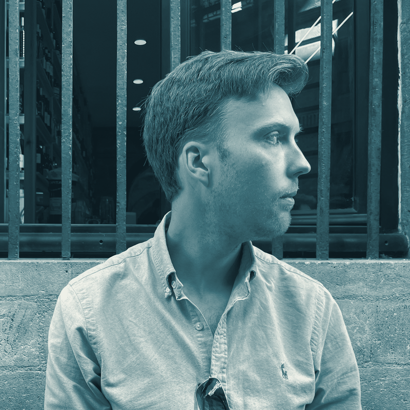
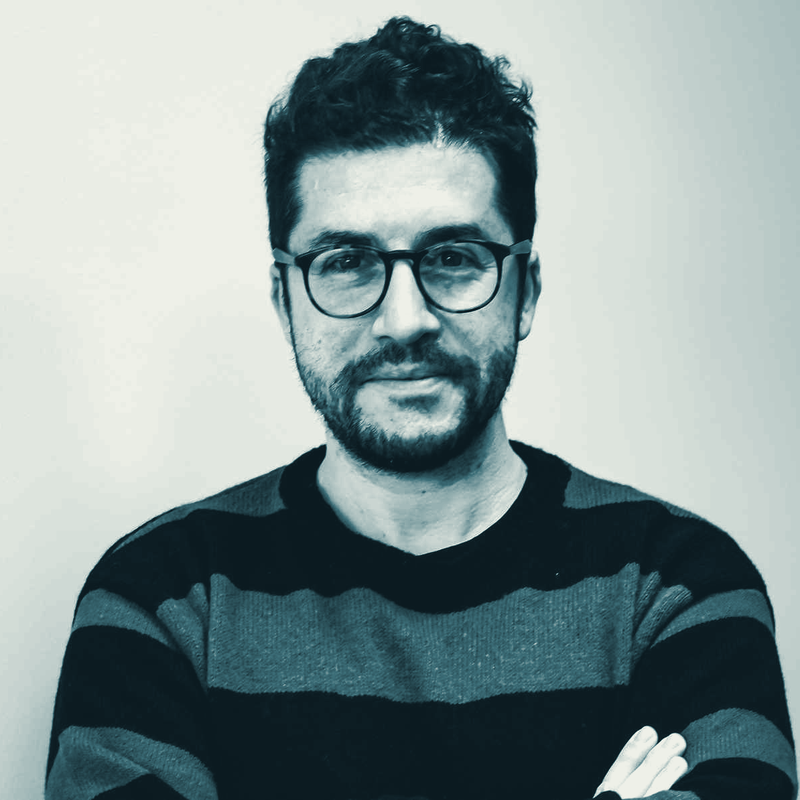
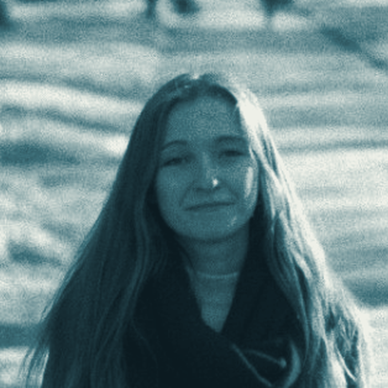
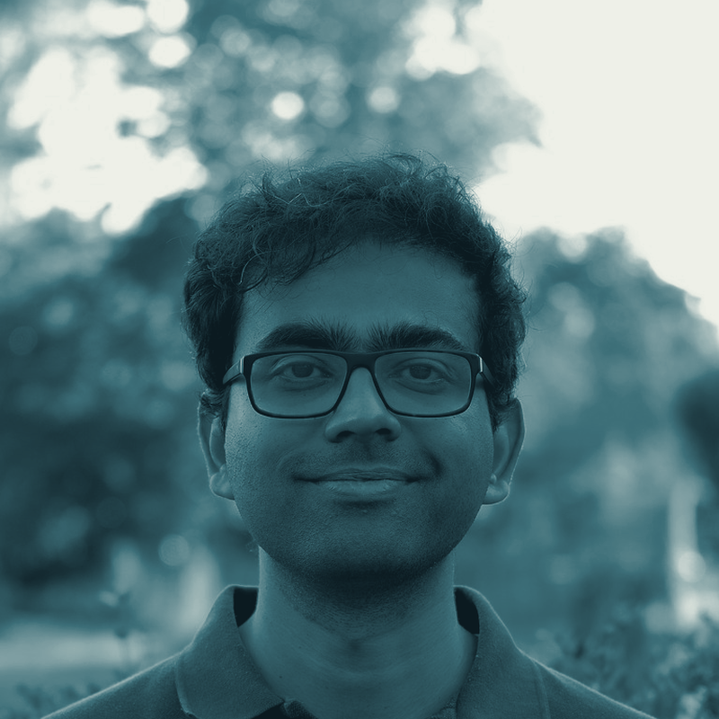
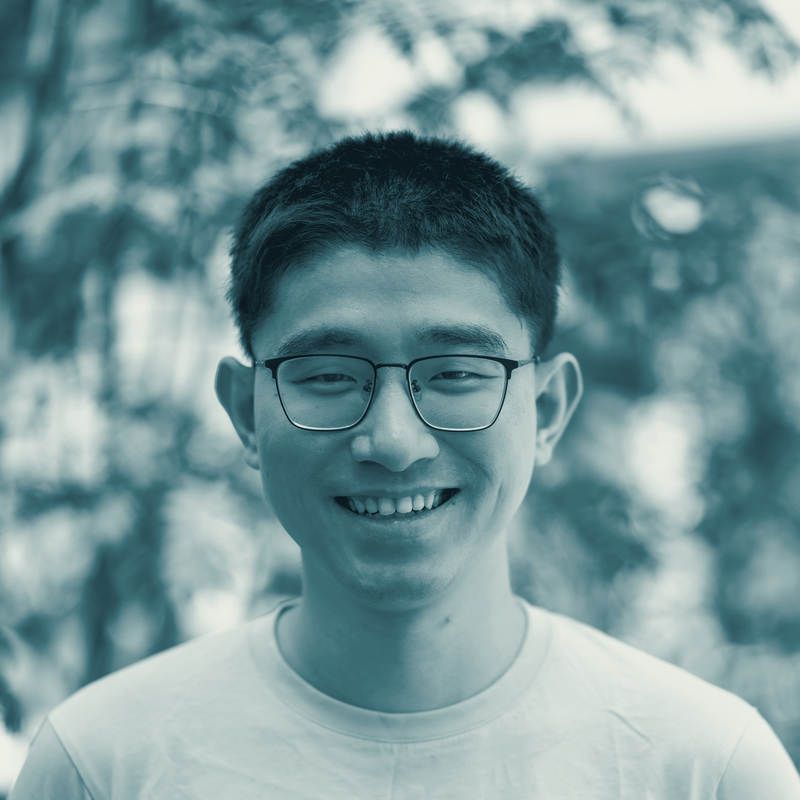

Mobility, inequality, and shocks — across scales.
Cities are not static arrangements of neighbourhoods — they are systems of movement. Who goes where, how often, and who they meet along the way shapes a person's lived experience of inequality far more than where they happen to sleep.
Yet urban research has been slow to move beyond residential measures of segregation toward a dynamic, mobility-based account of how inequality is reproduced — and experienced — across daily life. This colloquium asks how daily mobility shapes spatial inequality in European cities, and what that means for social integration, urban competitiveness and environmental justice. Free and open to the public, register here.
Six researchers trace how people actually move through cities — across the full range of daily activities, across socioeconomic groups, and across the migrant trajectories, environmental exposures and computational models that connect them. Together the talks build a multiscale picture of how urban structure, daily movement and social inequality intertwine across European cities — the synthesis that much research, including in and on the Swiss context, often lacks.
11 September 2026 · EPFL, Lausanne · room GC B1 10
The morning talks are open to the public. The afternoon includes a lunch and discussion for invited participants.

Andrew Renninger Central European University Spatial inequalities, across scales
Mattia Mazzoli ISI Foundation Mobility, segregation and preference
Olena Holubowska University of Neuchâtel Mobility over the life course
Anirudh Govind KU Leuven The scales of segregation through cocooning
Ye Hong Lund University Artificial intelligence for spatial inequalityThe colloquium is hosted at EPFL, Lausanne, at the Laboratory of Urban and Environmental Systems — where it takes place.